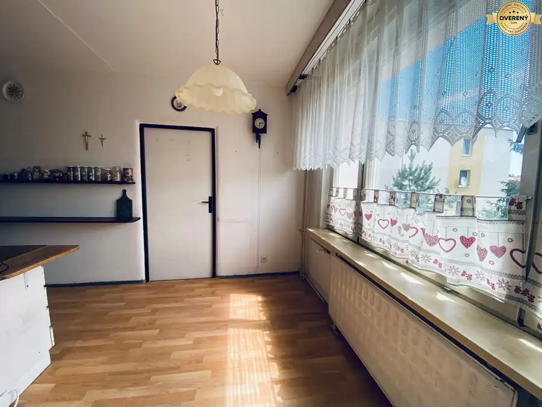
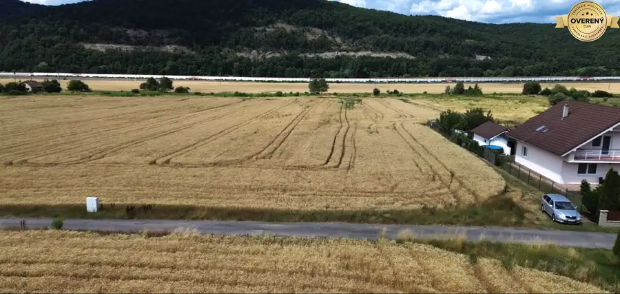
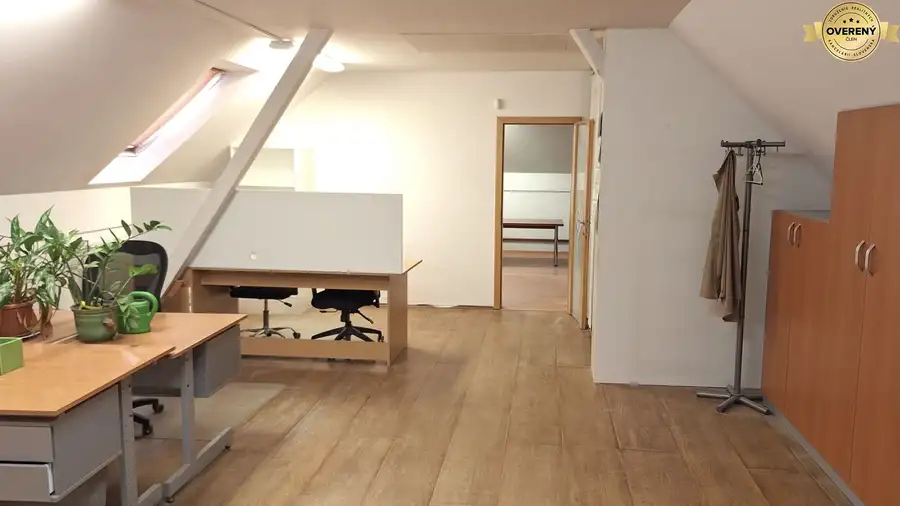

Na predaj slnečný pozemok v záhradkárskej oblasti Novosady - Detva
Detva
- Plocha334 m²
- Poschodie0.
- Vlastníctvoosobné
O nehnuteľnosti
Realitná spoločnosť ReAlls, vo výhradnom zastúpení majiteľa, ponúka na predaj slnečný pozemok o výmere 334 m², situovaný v obľúbenej záhradkárskej oblasti Novosady.
Pozemok ponúka príjemné miesto pre všetkých, ktorí hľadajú pokoj, oddych a priestor na realizáciu vlastnej záhrady či záhradnej chatky.
Čo ponúka tento pozemok?
výmera 334 m² – dostatočný priestor na záhradkárčenie aj relax,
mierne svahovitý a slnečný pozemok,
dobrý prístup autom – široká príjazdová cesta vedie priamo k pozemku,
úžitková voda priamo na pozemku,
vybudovaný skleník, ktorý môžete okamžite využiť na pestovanie,
možnosť vybudovania elektrickej prípojky v prípade súkromnej realizácie napojenia,
vhodný priestor na záhradnú chatku, posedenie, pestovanie alebo víkendový oddych.
Predstavte si miesto, kde môžete po pracovnom týždni vypnúť, venovať sa záhrade, vypestovať si vlastnú úrodu alebo si jednoducho posedieť v príjemnom prostredí mimo ruchu mesta.
Pozemok je zaujímavou príležitosťou pre záhradkárov aj pre tých, ktorí hľadajú vlastné miesto na relax a trávenie voľného času.
Pre viac informácií alebo dohodnutie obhliadky nás neváhajte kontaktovať.
Realitná spoločnosť ReAlls – váš partner pri kúpe nehnuteľnosti.
Parametre
| Rozloha pozemku | 334 m² |
|---|---|
| Poschodie | prízemie |
| Vlastníctvo | osobné |
| Voda | verejný vodovod |
| El. napätie | nie |
| Plyn | nie |
| Kanalizácia | nie |
| Terén | mierny svah |
| Prístupová cesta | neupravená cesta |
| Dátum zverejnenia | 10. 8. 2026 |
Kde to je
Mohlo by Vás zaujímať

Byt10 122 000 €TOP ponuka na predaj 4 izbový byt aj s garážou Očová 4-izbový92 m²3. podlažie Realitná spoločnosť Realls Vám exkluzívne ponúka na predaj 4-izbový byt s celkovou výmerou 91,88 m² (vrátane pivnice 5,07 m²), ktorý sa nachádza v…
Pozemok3 165 000 €Na predaj pozemok z veľkorysou výmerou Stožok Stožok 8447 m² Realitná spoločnosť ReAlls Vám vo výhradnom zastúpení majiteľa ponúka na predaj pozemok s celkovou výmerou 8 447 m², situovaný v katastrálnom území…
Nebytové priestory5 390 000 €Na predaj: Samostatný priemyselný objekt v obci Budča Budča 560 m² Realitná spoločnosť ReAlls Vám vo výhradnom zastúpení majiteľa, predstavuje na predaj ideálne priestory pre výrobu, dielňu, sklad alebo sídlo firmy s…